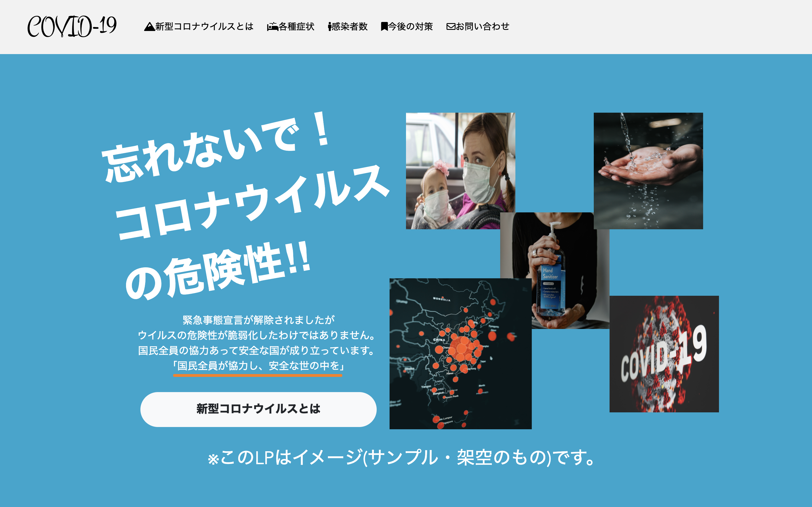
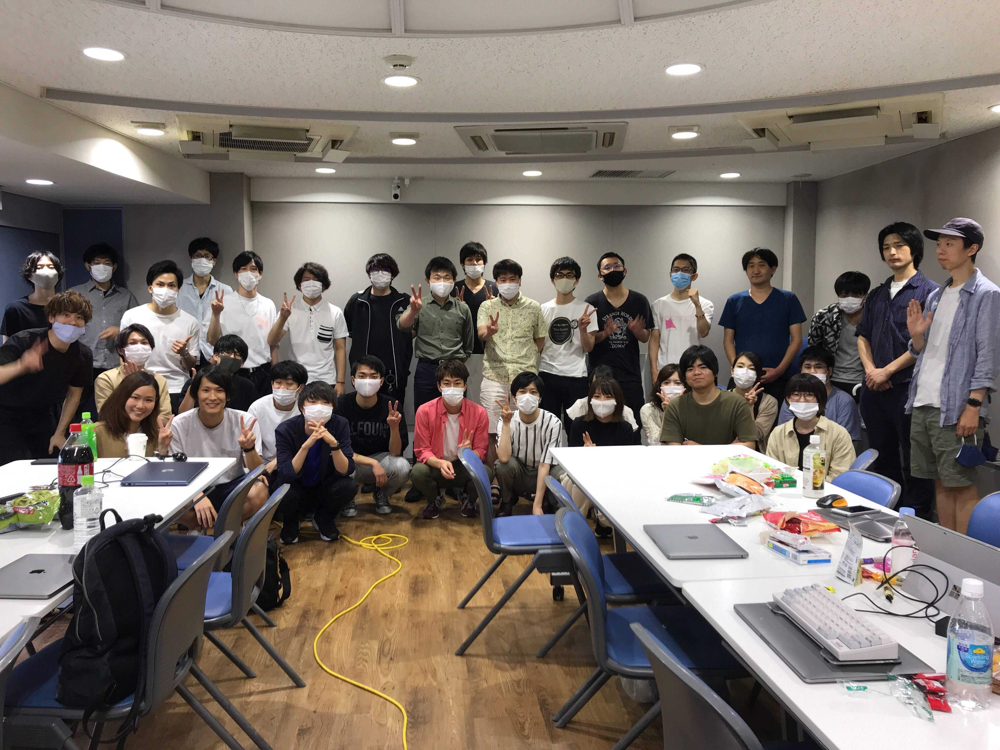
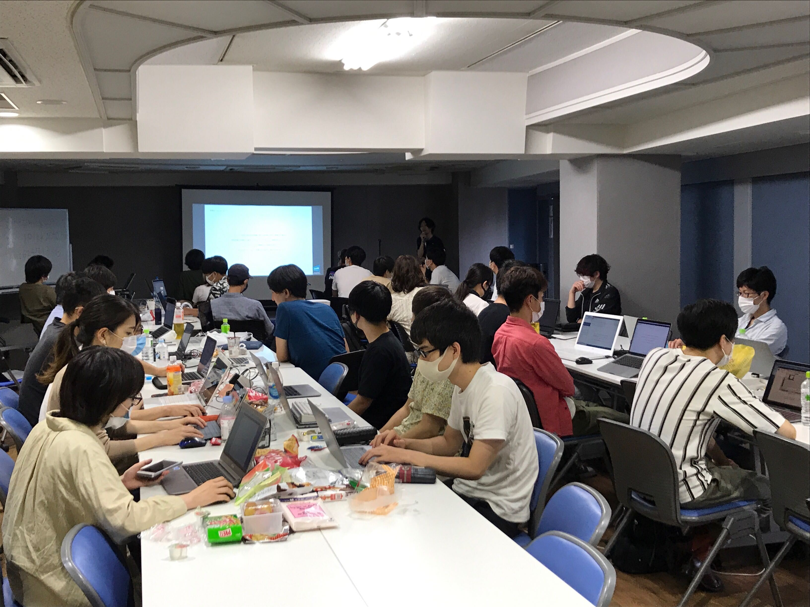
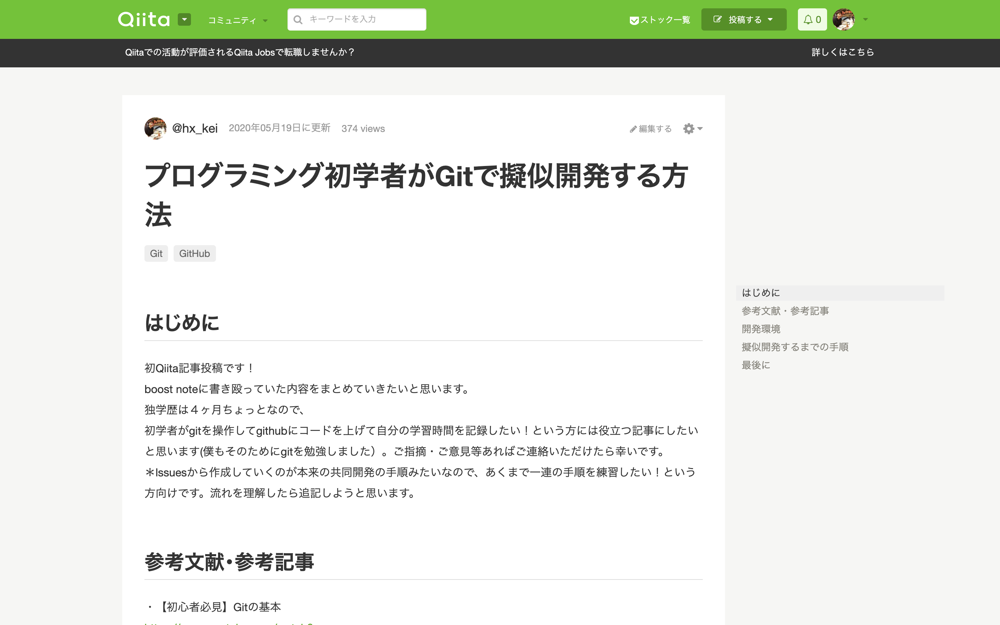

ただ今、転職活動中！
希望職種：バックエンドエンジニア
学習中言語：PHP,Laravel
希望勤務地：大阪、東京
希望年収：250万円/年 以上
希望職種：バックエンドエンジニア
学習中言語：PHP,Laravel
希望勤務地：大阪、東京
希望年収：250万円/年 以上
about

大庭 慶吾（おおば けいご）
1995年08月10日生まれ/25歳
「モノづくり」ができる建築に興味を持ち、大学を中退して父が経営する会社に入社しました。
入社２年目に現場監督として、１年で4件の新築現場を担当し、責任を持って業務に取り組んできました。
当時の現場の課題は納期を守れない事。
それに対して毎日のスケジュール確認・現場に入る職人への4、5日前の事前確認連絡・雨天中止や大工工事延長の予備日の設定など。
これらを徹底することで検査確認もスムーズに行え、全ての現場で納期を守り、誰よりも余裕を持って完工することができました。
毎日円滑に進めるための方法を考え、自然にその行動を取るようになりました。
常に頭を使い改善案を考える癖がこの時身につきました。
仕事しながら夜間で通った専門学校を卒業後、総合建設会社に就職。
そこで改めて現場監督の将来性に不安を感じ、真剣に考え、退職を決意しました。
当時は未熟だったと反省しています。
夜間で通った専門学校を卒業後、総合建設会社に就職。
そこで改めて現場監督の将来性に不安を感じ、真剣に考え、退職を決意しました。
当時は未熟だったと反省しています。
11月~12月にプログラミングスクールに通う資金のために、掛け持ちで週7・9~22時で働きました。業務は倉庫内作業・データ入力・調理補助です。
基本的にはどれも単純作業で体力的に辛い時もありましたが、無事目標金額を達成できました。
目標定められた時、その仕事へのやりがいや楽しさを見出すことができます。
11月~12月にプログラミングスクールに通う資金のために、掛け持ちで週7・9~22時で働きました。業務は倉庫内作業・データ入力・調理補助です。
基本的にはどれも単純作業で体力的に辛い時もありましたが、無事目標金額を達成できました。
目標定められた時、その仕事へのやりがいや楽しさを見出すことができます。
12月30日から現在まで継続的に学習を続けています
12月30日~1月16日(17日)：Ruby,Ruby on Rails
1月17日~2月21日(35日)：html,css,bootstrap,git
2月22日~3月22日(30日)：html,css,javascript
3月23日~5月7日(45日)：PHP,SQL
5月8日~6月18日(40日)：成果物アウトプット
6月19日~現在(66日)：Docker,aws,circleci,laravel
成果物については下記参照ください
より多くの人に使ってもらえる面白いアプリ開発に携わりたいです。
その為に必要な言語やスキルを常に取り入れていける環境で働きたいです。
建築専門学校を卒業していてもIT業界を志した理由は、「簡略化による価値を生み出し、より多くの人に喜んで貰いたい」と感じたからです。
便利なシステムは世の中に多くあるのですが、複雑化して一般ユーザーでは使いづらいシステムがあると考えています。
老若男女誰にでも扱えるよう常に改善策を考え、ユーザーに寄り添った提案・実装をしていきたいです。
価値とは人に喜んで貰って、はじめて意味を持つものだと考えています。
サービス開発時には、常に人に使って貰い、多くの人に便利だと喜んで貰う事を意識して作成しており、適宜改善・修正を行っています。
また、ITにはそれが実現可能だと思い、ITへの道を志しました。
私が得た情報やスキルは、どんどん他者へ提供していこうと考えております。
SNSを使って情報発信したり、技術記事を発信したりと、積極的に実行していきます。それにより1人でも多くの人に影響を与え、私の志す「より多くの人に喜んで貰うこと」に必要な条件だと考えています。
制作したゲームへのリンク

制作したゲームの実行画面動画
カスタマイズした個人ブログ

HPへのリンク
参加したもくもく会の集合写真
 →好奇心、探究心、行動力、コミュニケーション能力があります
投稿したQiita記事の一部
→新しい知識をインプットしアウトプットする事を常に意識しています
Laravelの個人開発(attendance)で使用した技術の解説動画
→使えそうと思ったら取り入れてみる思考力、最適な方法を探す検索力があります。
{kind=link}